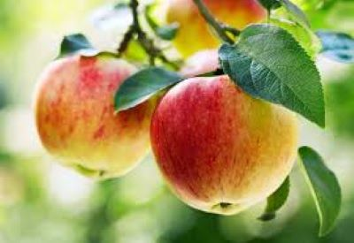

Botanical Overview Apples are the fruit of the apple tree, belonging to the rose family (Rosaceae), and are classified as a pome, a type of fleshy fruit where the ripened ovary and surrounding tissue become edible. The fruit typically matures in late summer or autumn and varies in size from 2.5 to 12 cm in diameter, with shapes ranging from nearly round to elongated or conical. Apple skin can be red, green, yellow, or combinations thereof, sometimes russeted, and is covered with a protective wax layer. Inside, apples usually contain five carpels, each with one or two seeds.
Home